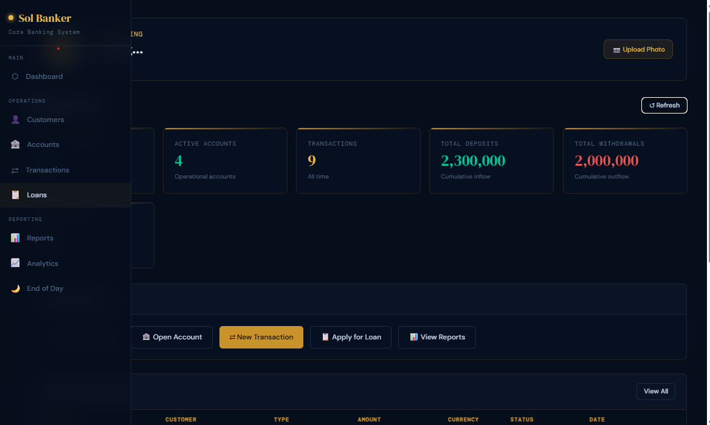
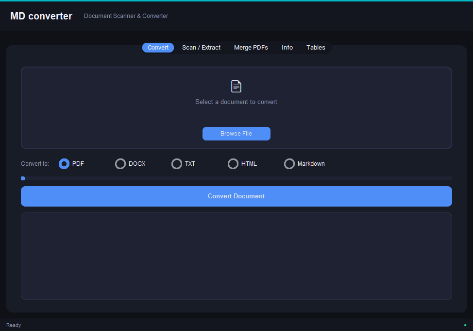
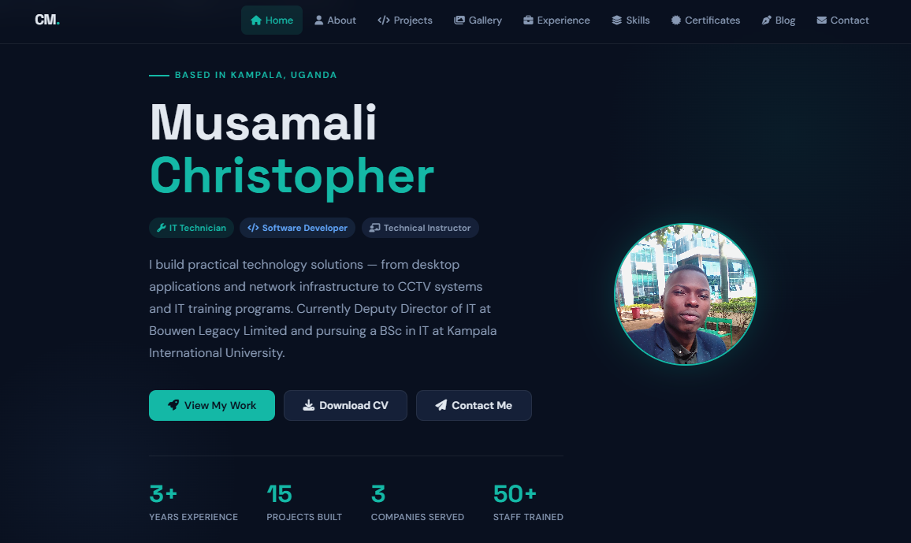
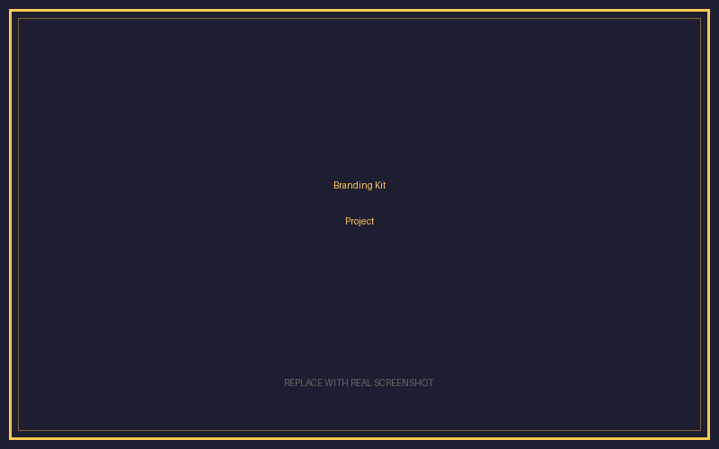
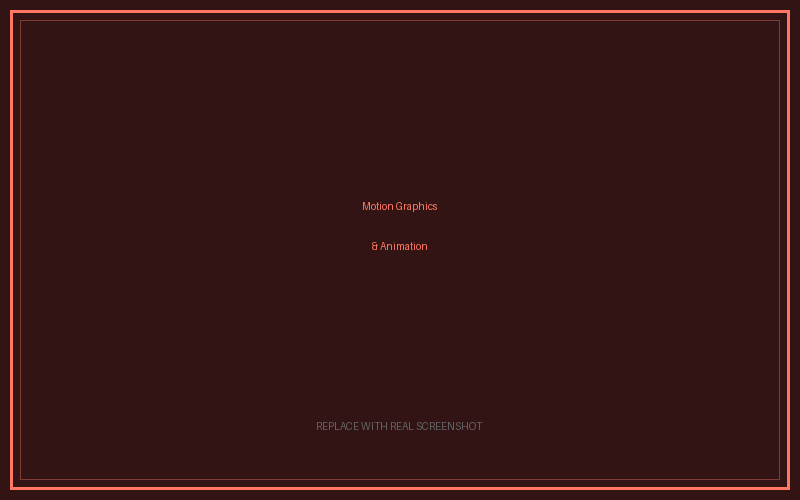

What I've Built
Projects
Software applications, IT field installations, and web work built for real use — not just as exercises.

Banking Management System
A full-featured desktop banking application covering the complete lifecycle of a customer account — from opening to closing. Built for institutional use with a focus on security and auditability.
- Secure login with hashed passwords and session management
- Role-based access: Admin, Manager, and Teller views
- Full transaction processing: deposits, withdrawals, transfers
- Audit log for every action — tamper-evident trail
- PDF and CSV report export

Class & Student Management System
An institutional management platform designed for schools and training centres. Centralises everything — from enrollment to final grades — in one desktop application accessible to admin staff.
- Student enrollment and profile management
- Attendance tracking with daily and monthly summaries
- Grade entry, GPA calculation, and academic reports
- Class and timetable scheduling module
- Excel and PDF data export for records and printing

Document Converter Utility
A productivity tool that solves a real everyday problem — converting documents between formats without needing an internet connection or paid software. Built with a clean, non-technical UI so anyone can use it.
- Word ↔ PDF ↔ plain text conversion
- Drag-and-drop file input
- Batch processing — convert multiple files at once
- Progress bar and conversion status feedback
- No internet connection required — fully offline

Media Player Application
A lightweight, custom-built desktop media player with a polished branded interface. Designed to be fast, simple, and visually distinct from generic system players.
- Play, pause, skip, seek, and volume controls
- Playlist queue management
- File browser for easy navigation
- Custom branded UI with dark theme
- Supports MP3, WAV, and common audio formats

Personal Portfolio Website
This portfolio — designed and built from scratch without any frameworks or templates. Every element is hand-coded with attention to performance, responsiveness, and professional presentation.
- 7-page responsive site with shared CSS design system
- Mobile hamburger nav, fade animations, skills marquee
- Formspree contact form — no backend required
- Live and hosted at lakers-tech.wuaze.com
CCTV Surveillance Installations
End-to-end CCTV projects for clients across Kampala — from initial site visit to final handover. Each installation is planned for optimal coverage, clean cable management, and easy remote access for the client.
- Site assessment and camera positioning planning
- Full cable routing, containment, and labelling
- DVR/NVR configuration and storage setup
- Remote viewing over network and mobile app setup
- Client training on system use and basic maintenance
Creative & Visual Work
Graphics & Design Projects
Alongside my IT and software work, I have completed a wide range of graphic design and visual communication projects — using Adobe Creative Suite, CorelDRAW, Canva, Figma, Framer, Filmora, and Adobe Animate.

Brand Identity & Logo Design Collection
Full brand identity packages developed for multiple clients and organisations — covering logo design, colour systems, typography selection, and brand guidelines documentation. Each project started from client brief and delivered a complete, deployable visual identity.
- Primary and secondary logo variants (horizontal, stacked, icon-only)
- Full brand colour palette and typography hierarchy
- Business card, letterhead, and stationery designs
- Brand guidelines PDF for consistent application
- Delivered in print-ready and web-ready formats

Poster, Flyer & Print Design Work
A large collection of poster, flyer, and print design projects produced for events, businesses, and organisations across Kampala. Each piece was designed to communicate clearly, capture attention, and work both in print and digital distribution.
- Event posters for conferences, trainings, and promotions
- Business promotional flyers and product cards
- A4/A3 print layouts prepared at 300dpi for commercial printing
- Digital versions optimised for WhatsApp, email, and web
- Multiple revision rounds to match client requirements
Social Media Content & Template Systems
Designed and produced social media content packages and reusable template systems for clients managing their own ongoing presence on Facebook, Instagram, and LinkedIn. Templates were built to be easily editable by non-designers.
- Post templates for Facebook, Instagram, and LinkedIn
- Story and highlight cover designs
- Profile and banner graphics for business pages
- Editable Canva template libraries handed to clients
- Content calendar visual layouts and infographic templates
UI/UX Wireframes & Interactive Prototypes
Designed application interfaces, web page mockups, and interactive prototypes for software and web projects — both for my own development work and for client projects requiring visual design before handoff to developers.
- Wireframes and high-fidelity UI designs in Figma
- Interactive prototypes with click-through flows in Framer
- Component libraries and design tokens for consistent UI
- Mobile and desktop responsive layout designs
- Design handoff documentation for developers

Motion Graphics, Animation & Video Editing
Produced animated content, motion graphics, and edited video for clients and personal projects using Filmora for video editing and Adobe Animate (AA Animator) for 2D animation and frame-by-frame motion work.
- Animated intro and outro sequences for video content
- 2D character and explainer animations in Adobe Animate
- Promotional video editing with text overlays and transitions
- Lower thirds, title cards, and animated logo reveals
- Social media short-form video content packages
Logo Design Portfolio — Multiple Clients
An ongoing collection of logo and mark designs created for businesses, organisations, and individuals across various sectors — retail, services, education, technology, and community organisations. Each logo is delivered in vector format for unlimited scalability.
- Wordmarks, lettermarks, pictorial marks, and combination marks
- Delivered as vector (AI, EPS, SVG) and raster (PNG, JPG) files
- Full/colour, black & white, and reversed colour variants
- Concept exploration and iterative client feedback rounds
- Usage documentation for print, web, and embroidery use cases
View Source Code on GitHub
All code repositories available on my GitHub profile.